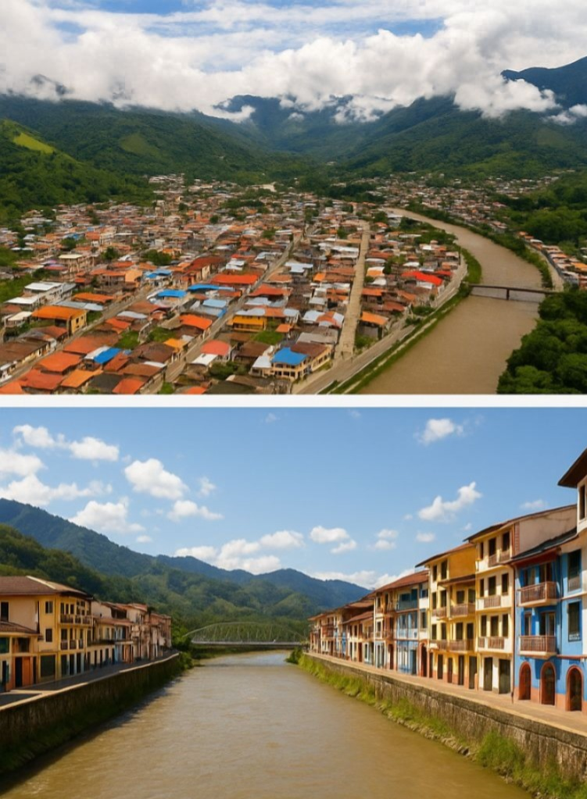
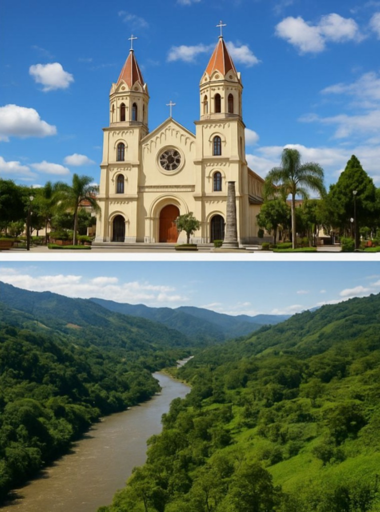
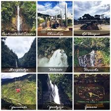

Vista aérea de Zamora:Desde el cielo, Zamora se revela como una ciudad enclavada en la majestuosa selva
amazónica del sur del Ecuador. Rodeada por colinas verdes y montañas de la cordillera
oriental de los Andes, su paisaje combina la expansión urbana con amplias áreas de
vegetación. El río Zamora atraviesa la ciudad, dándole vida y conectándola con sus
raíces naturales. La imagen aérea resalta tanto el crecimiento urbano como la armonía
con su entorno selvático.

Catedral de Zamora:La Catedral de Zamora es un emblema religioso y arquitectónico de la ciudad. Con su
fachada imponente y su diseño clásico, representa no solo un centro de fe para los
católicos de la región, sino también un punto de encuentro cultural y espiritual. En su
interior se realizan celebraciones litúrgicas, misas patronales y eventos importantes
para la comunidad zamorana. Además, su historia está ligada al desarrollo religioso de
la provincia desde tiempos coloniales.

Malecón de Zamora:El malecón es uno de los sitios más atractivos para visitantes y lugareños. Se extiende a
lo largo del río Zamora y está adornado con casas coloridas, jardines y senderos
peatonales. Es perfecto para caminatas familiares, paseos en la tarde y actividades
recreativas al aire libre. Desde aquí se puede observar la naturaleza amazónica,
disfrutar del aire fresco y apreciar la cultura urbana que se mezcla con el paisaje
selvático.
Río Zamora en la selva:Este río es una arteria vital que atraviesa el territorio zamorano y forma parte esencial
del ecosistema de la Amazonía. Sus aguas recorren densos bosques tropicales,
proporcionando hábitat a diversas especies de flora y fauna. El río no solo es
importante desde el punto de vista ecológico, sino también cultural, ya que muchas
comunidades indígenas y campesinas lo utilizan para el transporte, la pesca y
actividades diarias. Su belleza natural lo convierte en un símbolo de la
biodiversidad de Zamora.
